← Podgląd strony 15 (wersja Check v4)
Zrzuty z żywej strony z 21 listopada 2026 (strefa Europe/Warsaw). Widok telefonu 390×844, gęstość 2×. Kolory i czcionki pochodzą z computed style w przeglądarce, chyba że zaznaczono, że zmierzono je z pikseli grafiki.
Oryginał ma dziś dwie wersje: klasyczną stronę wideo z transkryptem oraz dłuższą stronę tekstową (inny układ, inny przycisk). Poniżej są obie, bo obie są na hissecretobsession.com.
| Element | Kolor | Skąd |
|---|---|---|
| Pasek / belka u góry („Discover His Secret Obsession…”) | #9B3144, tekst #FFFFFF | computed style |
| Przycisk „Unlock His Heart Today!” (mobile) | #3399FF, tekst #FFFFFF, obramowanie #3399FF | computed style (klasa btn-primary) |
| Ten sam przycisk po najechaniu / kliknięciu | #CC0033, tekst #FFFFFF | żywy plik CSS, reguła :hover/:active — nie ze zrzutu |
Przycisk desktop „Add to Cart!” (ukryty na telefonie, klasa hidden-xs) | to samo #3399FF, czcionka 30px | computed style |
| Tekst główny | #333333 | computed style |
| Linia „Hi, My name is James…” i duże zdania (26px) | #58595B | computed style |
| Linki, m.in. „Click here” | #337AB7 | computed style (domyślny niebieski Bootstrapa 3) |
| Przycisk odtwarzania na wideo | #E66C8D | computed style |
| Tło kolumny z treścią | #FFFFFF | computed style |
| Tło po bokach strony | #F3F3F3 | z pikseli zrzutu |
| Ramka „Have questions?” | tło #DFF0D8, tekst #3C763D | computed style |
| Ramka „References” | tło #D9EDF7, tekst #31708F | computed style |
| Element | Kolor | Skąd |
|---|---|---|
| Nagłówki typu „It's Something He CRAVES…”, „The Glimpse Phrase”, „One Time Cost $49” | #9F2740 | computed style |
| Tekst główny | #000000 (czasem dziedziczone #333333) | computed style |
| Różowe pudełko z cytatem | tło #FFECF0, tekst cytatu #9F2740 | computed style (tło) i piksele (tekst) |
| Żółte podkreślenie zdań i „just $49!” | #FFFC00, tekst #000000 | computed style |
| Sekcja „secrets you're about to discover” | tło #F3F3F3 | computed style |
| Przycisk-grafika „Add To Cart” (nie CSS) | gradient ok. #FFDB00 → #FFC500, brzeg ok. #FFA300; kółko z koszykiem ok. #002A41; napis prawie czarny | z pikseli grafiki — to obrazek, nie styl CSS |
| Link pod przyciskiem „Click Here To Get Instant Access Now!” | #106CBF | z pikseli zrzutu |
| Element | Font |
|---|---|
| Tekst główny (body) | "Helvetica Neue", Helvetica, Arial, sans-serif — 15px, waga 400, interlinia 21.4286px (czyli 1.4286), kolor #333333 |
| Nagłówek H1 „His Secret Obsession” | Arial, sans-serif — 36px, waga 500, interlinia 39.6px (1.1), kolor #333333 |
| „Hi, My name is James…” | lato_black — 26px, waga 400, kolor #58595B (to aktualny font na żywej stronie; nie Times) |
| Duże zdania, np. „The Hero Instinct” | arial — 26px, waga 400, kolor #58595B |
| Przycisk mobile „Unlock His Heart Today!” | "Helvetica Neue", Helvetica, Arial, sans-serif — 14px, waga 400, kolor #FFFFFF |
| Pasek górny | "Helvetica Neue", Helvetica, Arial, sans-serif — 15px, kolor #FFFFFF |
| Element | Font |
|---|---|
| „Hi, My name is James…” oraz nagłówki w kolorze #9F2740 | "Libre Baskerville", 18–30px, waga 700, często italic |
| Tekst główny | Roboto, zwykle 14–16px, waga 400 lub 700, kolor #000000 |
| Podpisy / cytaty pomocnicze | "Roboto Slab", 14–17px, kolor #95A5A6 |
| „One Time Cost $49” | Roboto 28px, kolor #9F2740 |
| Stopka „SECURE ORDER” | "Open Sans", Arial, sans-serif — 8px, waga 700, kolor #404040 |
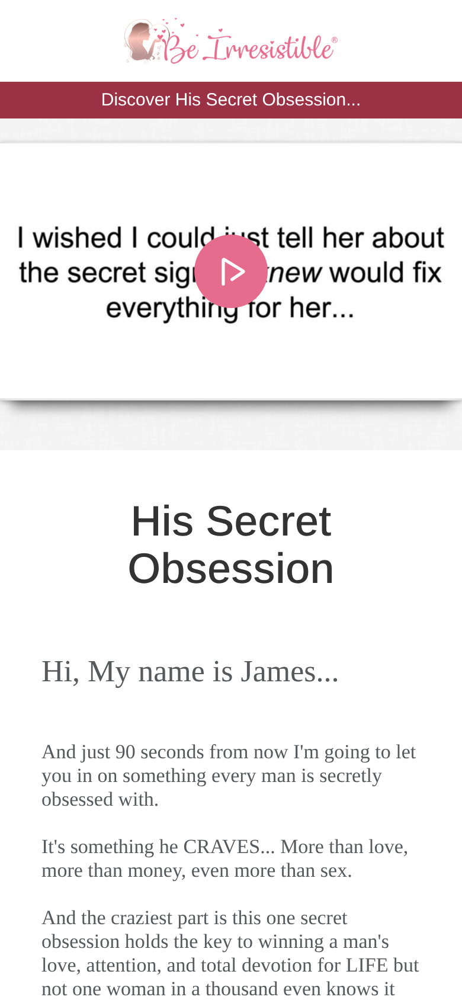
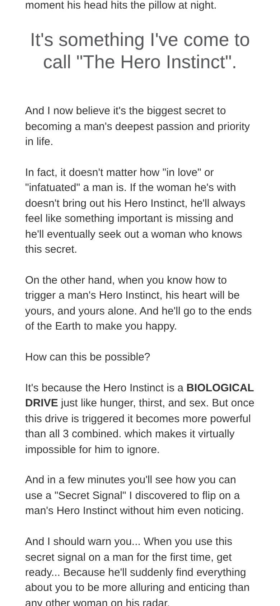
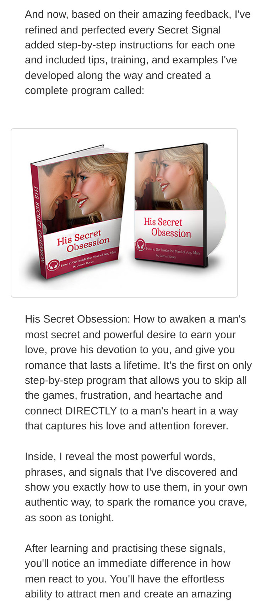
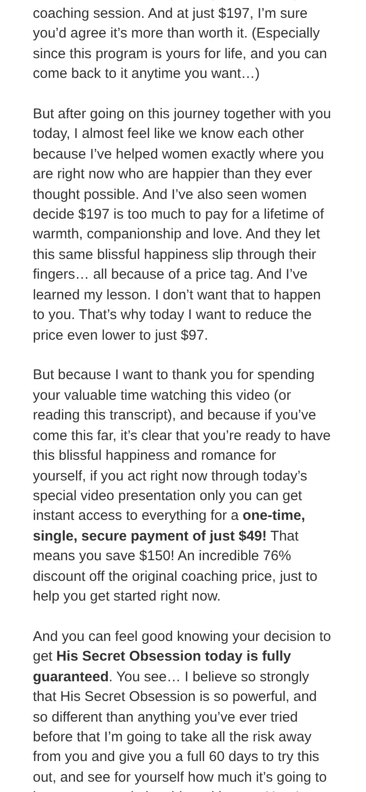
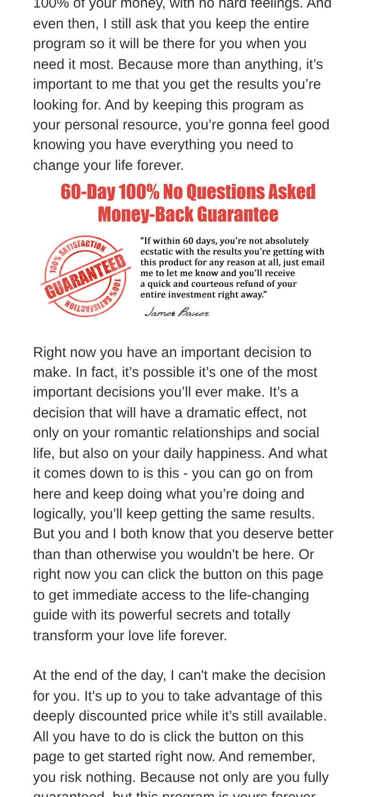
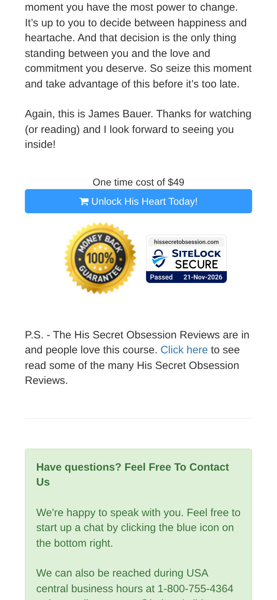
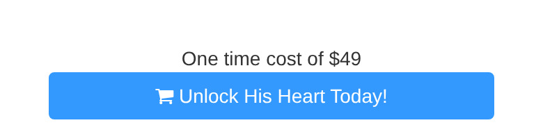
btn-primary.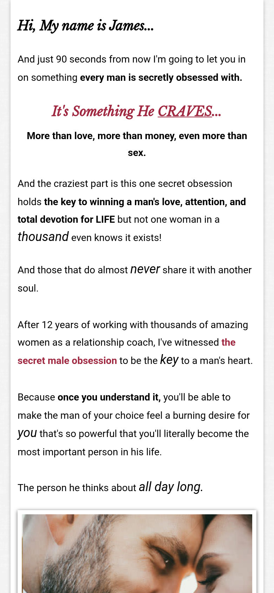
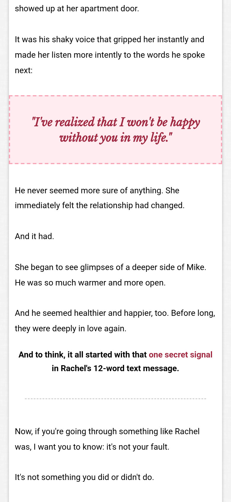
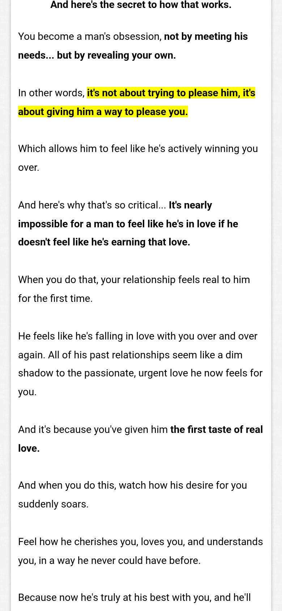
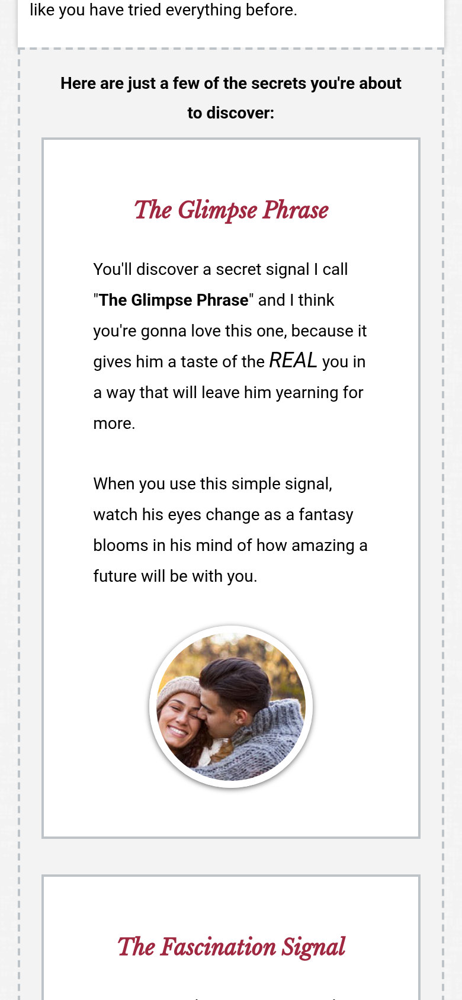
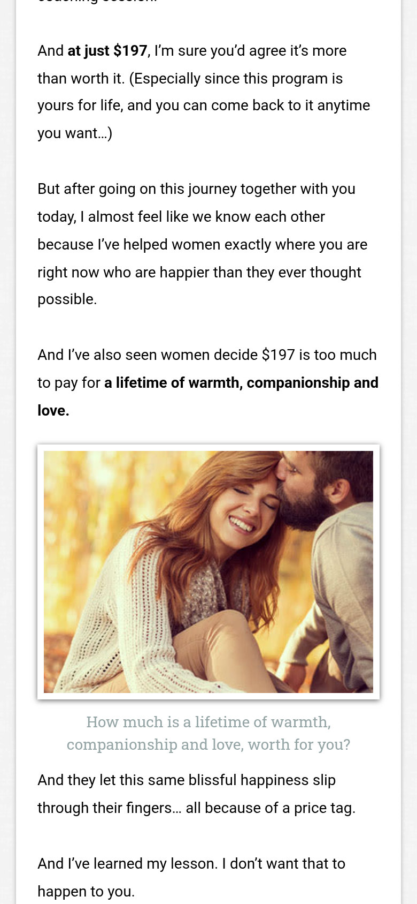
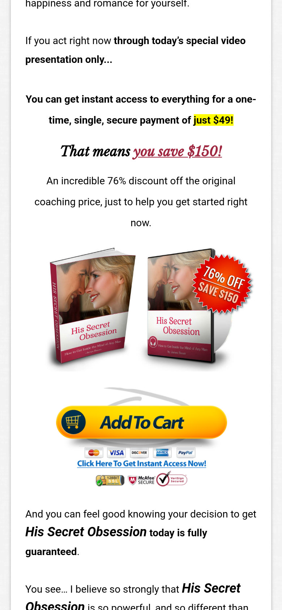
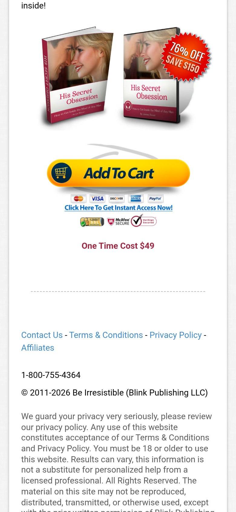
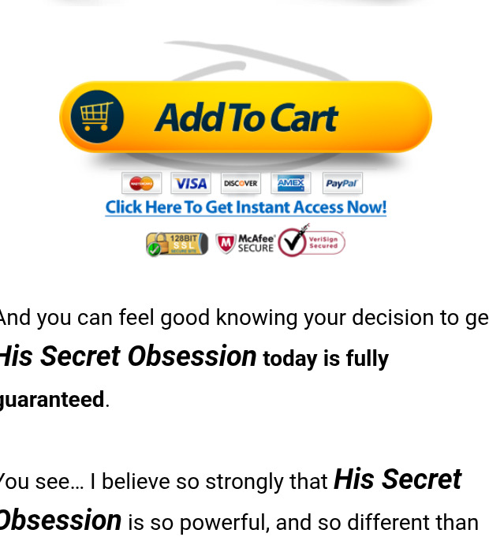